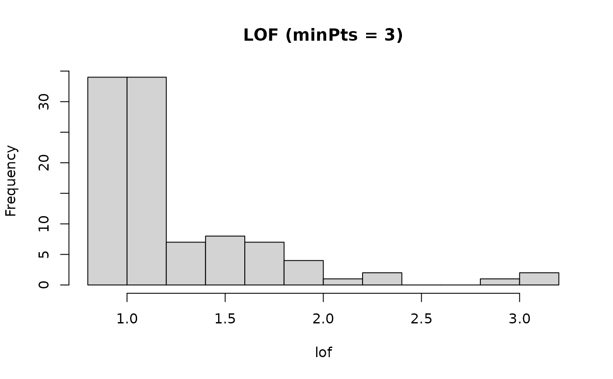
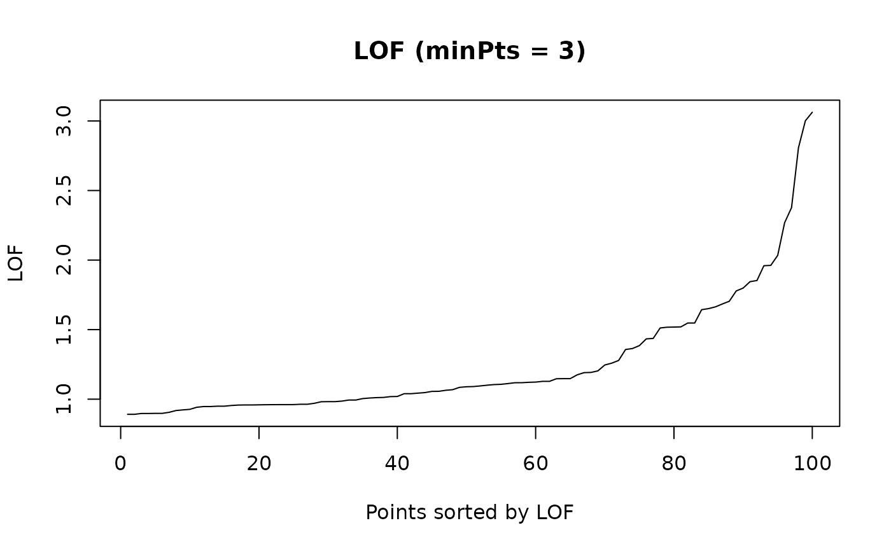
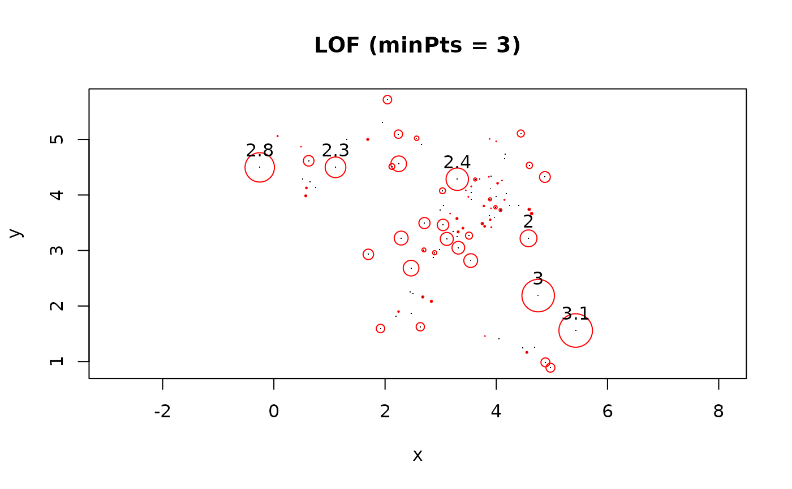

Calculate the Local Outlier Factor (LOF) score for each data point using a kd-tree to speed up kNN search.
Details
LOF compares the local reachability density (lrd) of a point to the lrd of its neighbors. A LOF score of approximately 1 indicates that the lrd around the point is comparable to the lrd of its neighbors and that the point is not an outlier. Points that have a substantially lower lrd than their neighbors are considered outliers and produce scores significantly larger than 1.
If a data matrix is specified, then Euclidean distances and fast nearest neighbor search using a kd-tree is used.
Note on duplicate points: If there are more than minPts
duplicates of a point in the data, then LOF the local readability distance
will be 0 resulting in an undefined LOF score of 0/0. We set LOF in this
case to 1 since there is already enough density from the points in the same
location to make them not outliers. The original paper by Breunig et al
(2000) assumes that the points are real duplicates and suggests to remove
the duplicates before computing LOF. If duplicate points are removed first,
then this LOF implementation in dbscan behaves like the one described
by Breunig et al.
References
Breunig, M., Kriegel, H., Ng, R., and Sander, J. (2000). LOF: identifying density-based local outliers. In ACM Int. Conf. on Management of Data, pages 93-104. doi:10.1145/335191.335388
See also
Other Outlier Detection Functions:
glosh(),
kNNdist(),
pointdensity()
Examples
set.seed(665544)
n <- 100
x <- cbind(
x=runif(10, 0, 5) + rnorm(n, sd = 0.4),
y=runif(10, 0, 5) + rnorm(n, sd = 0.4)
)
### calculate LOF score with a neighborhood of 3 points
lof <- lof(x, minPts = 3)
### distribution of outlier factors
summary(lof)
#> Min. 1st Qu. Median Mean 3rd Qu. Max.
#> 0.8912 0.9628 1.0900 1.2542 1.3972 3.0627
hist(lof, breaks = 10, main = "LOF (minPts = 3)")

### plot sorted lof. Looks like outliers start around a LOF of 2.
plot(sort(lof), type = "l", main = "LOF (minPts = 3)",
xlab = "Points sorted by LOF", ylab = "LOF")

### point size is proportional to LOF and mark points with a LOF > 2
plot(x, pch = ".", main = "LOF (minPts = 3)", asp = 1)
points(x, cex = (lof - 1) * 2, pch = 1, col = "red")
text(x[lof > 2,], labels = round(lof, 1)[lof > 2], pos = 3)
